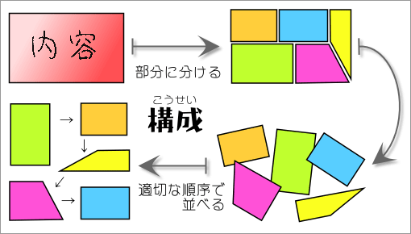

レポートの構成の基本
構成とは、内容をいくつかの部分に分けて、それを適切な順序で並べるということである。どんなに頭の良い人でも、複雑な内容の全体をいきなり理解することは容易ではない。内容を部分に分けて順序よく提示することで、理解しやすいものにすることができるのである（もちろん難しいものが簡単になるわけではないが、理解しやすいものにすることはできる）。

以上の説明からも分かるであろうが、報告でも論文でも、構成は重要なポイントである。以下に、レポートの構成について、詳しく説明することにする。
報告の構成の基本
報告で、内容を相手に効率的に伝えるためには、全体がうまくまとめられていなければならない。寄せ集めた情報がバラバラに並べられていたのでは、とても分かりにくいというだけではなく、報告とはいえないものになってしまう。
報告の構成の基本は、次のようなものになる。
- 題名（タイトル）
- 報告本体
- はじめに
→何について報告するかを短くまとめて書く
- 本文
- まとめ
→報告の内容を簡潔にまとめて書く
- 注釈
- 参考文献リスト
- 附属資料
題名
報告では、まず、題名（タイトル）を明示する。題名は、表紙と１ページ目の先頭に書く（表紙をつけないときは、１ページ目の先頭だけに書く）。表紙の書き方は、〔題名と表紙〕を参照せよ。
報告本体
報告本体は、「何について報告するか」→「報告の具体的な内容」→「内容の簡潔なまとめ」の順番で書く。
はじめに
報告本体では、まず、「何について報告するか」を書かなければならない。これは、『はじめに』の中に書くのがふつうである。『はじめに』の例を以下に示す。
はじめに
近年、科学技術の急速な発展が、社会環境を急激に変化させている。そのなかで、「生涯学習」の必要性が声高に叫ばれてきている。現代の社会では、新たな知識や技術に対応するための学習が生涯にわたって必要とされるのである。生涯学習が必要とされる社会では、より多くの人がより良い日常生活を送るために、学習の機会が広く提供されていなければならないであろう。
本報告は、日本における生涯学習推進の現状について報告するものである。特に、多くの自治体が設置する「生涯学習推進センター」の活動とその問題点についてまとめる。
はじめに
より質の高い生活を送るためには、心身の健康が不可欠である。健康の維持にとって日常的な運動が重要であることは広く理解されている。しかし、現代の都市生活では、時間的にも空間的にも様々な制約が存在している。そのため、都市生活者が日常的に運動を行なうには、小型で効果的な補助器具が必要である。
本報告では、短時間で全身運動を可能にする運動器具「X-Magic」を用いて行なった実験の結果を紹介する。
『はじめに』は、報告のテーマと、報告を書く目的を説明するものである。〈何について書くのか？〉と〈どのように書くのか？〉とを簡潔にまとめることになる。
何について書くのか？
『はじめに』では、まず、報告のテーマに関連して問題となる（問題になっている）点を簡潔に指摘する。たとえば、「生涯学習」についての報告ならば、生涯学習の必要性（現在、生涯学習が必要なのはなぜか）や重要性（なぜ生涯学習が重要な問題となるのか）を簡潔に述べればよいだろう。
どのように書くのか？
次に、その報告で何をしようとしているのかを書く。たとえば、「……現状について報告する。」とか「……実験の結果を紹介する。」とかいうように書けばよい。
なお、自分が今書いている報告を指す場合は、「この報告」、「本報告」のようにいう。
本文
本文では、具体的な内容を書いていく。
本文は適当な数の章と節に分けて書くのがふつうである。また、節は適当な数の段落（形式段落）に分けて書くようにする。
本文の構成は、報告のテーマや内容によっても変わってくる。ここでは一般的な構成の例を示すことにする。
- 用語の定義・説明
例：生涯学習に関する用語の定義を述べる
- 「生涯学習」とは何か
- 「生涯学習推進センター」とは何か
- 現状の記述
例：「生涯学習推進センター」の現状を述べる
- 全国にいくつくらいあるか
- どのような場所にあるか
- どんな活動をしているのか
- 利用の条件や費用はどうか
- 実際の利用状況はどうか
- 問題点の指摘
例：「生涯学習推進センター」にどのような問題点が指摘されているのかを述べる
- すべての「生涯学習推進センター」にあてはまる一般的な問題点
- 特定の「生涯学習推進センター」に見られる個別的な問題点
- 解決法の提示
例：３で指摘した問題点について、どのような解決法が提案されているか述べる
- 総合的な解決法の提示
- 個別的な解決法の提示
- 記述の対象・範囲の指定
例：テーマとなる話題を提示する。また、何について報告するのかを具体的述べる
- 健康のためには運動が必要であることを証拠を挙げながら指摘する［健康と運動という話題を提示する］
- 都市生活者は運動をする場所や時間がないことを証拠を挙げながら指摘する［記述の範囲を都市生活者に絞ることを述べる］
- 都市生活者でも簡単に運動できる器具があることを紹介する［その器具が記述の対象となることを述べる］
- データの提示・説明
例：運動器具を使って運動した場合の実験データを提示する
- 本当に効果がある器具なのか確認するための実験だと述べる［実験の目的を述べる］
- 実験の方法や回数、実験の場所や期間、実験の対象となる人の属性や人数などを詳しく述べる［実験の概要を述べる］
- 実験で得られたデータを表やグラフで提示する［実験の結果を示す］
- 何を表わしている表やグラフか、項目の内容・数値の単位は何かなど、表やグラフの読み方を詳しく説明する［データの読み方を説明する］【参考→図表の示し方】
- データの分析・解釈
例：実験の目的にしたがって、実験の結果を分析する
- 「このグラフから明らかなように、器具の使用期間が長くなるほど、被験者の体脂肪が減少している。」などと述べる［データが何を表わしているのか分析する］【参考→図表の示し方】
- 「これは、器具による運動が体脂肪を減少させることを示している。」などと述べる［データが何を表わしているのか解釈する］
- 事実・問題点の指摘
例：実験によって明らかになったこと、明らかにできなかったことを述べる
- 器具による運動に実際の効果があることを述べる［実験によって明らかになった事実をまとめる］
- たとえば、実験の結果に個人差が見られたことなどを指摘し、さらに詳しい実験が必要だと述べる［実験の結果に対する疑問や課題を述べる］
まとめ
『まとめ』では、本文で述べた内容を簡潔にまとめて示す。何について述べたのか、報告のポイントはどこなのかがわかるように書く。
報告の場合は、本文で示した事実だけをまとめて述べべればよい。自分の意見や主張を書く必要はない（ただし、他人の意見や主張は書いてもよい）。
アンケートや実験などを行なった場合には、その結果も簡潔にまとめて示すようにするとよい。『まとめ』の例を以下に示す。
まとめ
本報告では、日本における生涯学習推進の現状について報告した。生涯学習を推進する目的で40以上の自治体が「生涯学習推進センター」を設置している。
しかし、「生涯学習」の概念が明確に定義されていないために、効果的な活動ができていない面がある。また、地域社会との連携の不足から、十分に機能していないセンターも多い。
「生涯学習推進センター」には、設置目的を住民に周知するとともに、地域の実情に応じた活動が求められている。
まとめ
生活の質を高めるためにも、心身の健康は重大な問題である。
本報告では、運動器具「X-Magic」を用いた運動により効果的な健康増進が可能であることを示した。毎日５分間の運動を１ヶ月続けることで、体脂肪率が平均3.5％低下した。
この方法は、自宅などの狭い場所で短時間で行なえるため、都市生活者の日常的な健康維持に適している。
注釈
注釈があるときには、『まとめ』と参考文献リストの間に書く。注釈がない場合や、脚注にしたときには書く必要はない。注釈について、より詳しいことは【→注釈の付け方】を参照せよ。
参考文献リスト
参考文献リストについては、【→参考文献の書き方】および【→参考文献リスト】を参照せよ。
なお、アンケートや実験の結果などの報告で、何も文献を参考にしなかったときにはリストをつける必要はない。
附属資料
必要があれば、実験のデータやアンケートの集計結果、調査用紙の見本など、本文の内容を補足する資料をつける。
附属資料には、「資料１」、「資料２」などの番号をつける。また、何を示す資料なのかわかるような説明をつけるようにする。
なお、実験のデータなどは、参考文献リストの前に置かれることもある。
小論文の構成の基本
【論文とは？】で指摘したように、論文は、秩序ある構成で書かれるべきものである。
小論文は論文の一種であるから、《特定の問題に答えを出すこと》を目指すものである。そのため、小論文では、次のような構成が基本となる。【参照：→論文の基本構成】
- 題名（タイトル）
- 論文本体
- 序論
→問題提起（問題を示す）
- 本論
→議論（証拠を示す）
- 結論
→帰結（答えを示す）
- 注釈
- 参考文献リスト
- 附属資料
題名
小論文では、まず、題名（タイトル）を明示する。題名は、表紙と１ページ目の先頭に書く。表紙の書き方は、〔題名と表紙〕を参照せよ。
論文本体
論文本体は、「問題を示す」→「証拠を示す」→「答えを示す」という順番で書く。
序論
論文本体は、序論ではじまる。序論では、何を目指して、どのような目的で書かれた論文なのかがわかるようにする必要がある。序論には、以下のような内容を書くのがふつうである。
なお、ここで示したものは、序論の一般的な構成の例である。必要に応じて、いくつかの項目を省略したり、項目の順序を変えたりしても差し支えない。
- 論文のテーマ
→何について研究するのかを紹介する
- 論文の主題
→どんな問題に答えを出そうとするのかを提示する
- 研究の動機
→そのテーマにどのような興味や関心があるのかを述べる
→なぜそのテーマに興味や関心を持ったのかを述べる
- 研究の重要性
→その問題がなぜ重要なのかを述べる
→その問題がどのような点で重要なのかを述べる
- 先行研究の概要
→テーマに関する既存の研究にはどのようなものがあるかまとめる
- 先行研究の問題点
→既存の研究をどのように評価するのか述べる
→既存の研究にはどのような問題点があるのか述べる
- 研究の目的
→論文の中で何を明らかにしようとしているのかを述べる
- 研究の概要
→問題を明らかにするために何をするのかを述べる
- 期待される成果
→論文によって何が明らかにできるのかを述べる
序論は、論文の全体を手っ取り早く見通すためのものである。したがって、序論では、いずれの項目も特に詳しく書く必要はない。むしろ、それぞれの項目が簡潔にまとまっていた方がよいのである。
なお、序論は、「はじめに」、「序論」、「序」、「緒言」などのタイトルで書き、章の番号として「０」か「１」をつけるようにする。なお、章のタイトルについては、【見出しの付け方】を、章の番号については〔通し番号の付け方〕を参照せよ。
以下に、序論の例を挙げておく。
０．はじめに
本論文は、日本語の言文一致をとりあげ［⇒論文のテーマ］、近代口語体が話しことばの規範としてどのように意識されているのか［⇒論文の主題］考察する。
しばしば日本語は、話しことばと書きことばの距離がある言語だと言われる。しかし、英語や中国語を学習しても、話しことばと書きことばが同じであるわけではない。日本語で、とりわけ両者の距離が指摘されるのはなぜだろうか［⇒研究の動機］。
書きことばの規範と理解されることの多い近代口語体が、話しことばにおいてどのように意識されているか知ることは、話しことばと書きことばとの関係を理解する重要な手掛かりとなるはずである［⇒研究の重要性］。
話し手の規範意識を調査したものに、国立国語研究所（1980）があるが［⇒先行研究の概要］、すでに現状を反映していない可能性が高い［⇒先行研究の問題点］。
本論文では、近代口語体に対する話し手の規範意識を知るために［⇒研究の目的］アンケート調査を行ない［⇒研究の概要］、近代口語体の規範性について明らかにする［⇒期待される成果］。
本論
本論は、論文でもっとも重要な部分である。本論では、序論で示した問題に対して、証拠を挙げながら答えを出さなければならない。
本論の構成は、論述の方法によって変わってくる。ここでは、基本的な構成のパターンを示しておく。
序論の内容の詳しい説明
まずは、序論で簡潔に述べた内容に、詳しい説明を加える。
- 用語の定義・説明
例：「言文一致とは、ある言語の口頭言語（話しことば）と書記言語（書きことば）とに齟齬がないという意味である。言文一致として問題になるものには、言文一致運動、言文一致文、言文一致体、近代口語体、標準語がある。」
- 記述の対象・範囲の指定
例：「本論文では、このうち近代口語体を考察の対象とする。近代口語体は、現在、規範的と見なされている口語体と定義される。書きことばだけでなく、話しことばにもあてはまる概念である。」
- 先行研究の詳しい紹介
［先行研究の引用や要約を示しながら、先行研究の内容・ポイントがわかるように紹介する。テーマにもよるが、１つではなく複数の先行研究を紹介するのがふつうである。そのとき、できれば立場の異なる先行研究を紹介すると議論がしやすくなる］
例：「国立国語研究所（1980）は、近代口語体に対する話し手の規範意識について、次のように報告している。／……／この結果は、近代口語体が話しことばの規範という役割を担っていることを示唆するものである。／また、間ほか（2006）は、関西地域でのフィールドワークから、地域共通語となった方言には、フォーマルな規範として意識される面が存在すると指摘している。一般に、方言は固有の書記体系を持たないものであるから、前出の国立国語研究所による調査結果とは必ずしも一致しない指摘であるといえる。」
- 先行研究の批判的な検討
［紹介した先行研究について、それぞれに対する評価、優れていると評価する点、問題があると考える点などを整理して述べる］
例：「国立国語研究所（1980）による調査は、日本全国の幅広い年齢層を対象に行なわれており、資料的価値が高いものである。しかし、調査の実施時期が古いため、現状を反映しているとは言いがたい面がある。一方、間ほか（2006）の調査は、実施時期は新しいものの、限られた地域でなされており、必ずしも全体を代表しているとは考えられない。」
- 具体的な研究方法の提示
例：「今回、国立国語研究所（1980）による言語調査資料を参考に、全国から無作為抽出した3000人の日本語母語話者を対象とするアンケート調査を行なった。国立国語研究所による言語調査資料と、新たなアンケート調査の結果とを比較・対照することで、近代口語体が話しことばの規範として、人々にどのように意識されているのか明らかにしすることができるであろう。」
具体的な議論の展開
次に、章または節を改めて、具体的な内容を記述していくことになる。証拠を挙げながら論を進めて、論文の主題に対する答えを導く部分である。
この部分は、テーマや内容によって、構成が大きく異なってくる。論理的で明晰な構成になるように心掛ける必要がある。
結論
論文の主題に対する答えは、本論の中で明らかにすべきものである。結論では、論文の主題に対する答えをわかりやすくまとめて示すことになる。
結論には、次のような内容を書く。
- 研究の概要の再提示
例：「本研究では、アンケート調査の結果に基づき、近代口語体に対する話し手の規範意識について考察した。」
- 結論をまとめて述べる
例：「その結果、以下のことが明らかになった。……」
- 研究の成果を述べる
例：「これは、現代日本語での話しことばと書きことばとの関係を考えるうえで、重要な成果であると思われる。」
- 今後の展望を述べる
例：「今後は、近代口語体の規範性が言語資料にどのように現われるかを分析することで、現代日本語における言文一致のあり方を明らかにしてゆく必要があるであろう。」
注釈
注釈は、『まとめ』と参考文献リストの間に書く。脚注にしたときには書く必要はない。注釈について、より詳しいことは【→注釈の付け方】を参照せよ。
参考文献リスト
参考文献リストについては、【→参考文献の書き方】および【→参考文献リスト】を参照せよ。
附属資料
必要があれば、実験のデータやアンケートの集計結果、調査用紙の見本など、本文の内容を補足する資料をつける。
附属資料には、「資料１」、「資料２」などの番号をつける。また、何を示す資料なのかわかるような説明をつけるようにする。
なお、実験のデータなどは、参考文献リストの前に置かれることもある。